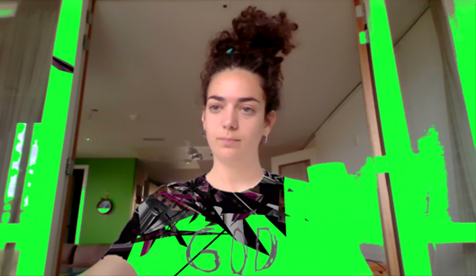

ABOUT -
SURF = Surfacing Unused Realities Forum.
In these times of avoiding the inevitable, we try to connect in digital ways. We hope you will join us in order to create new ways of communicating. Let’s plan, contemplate, act, overthink, speak, disagree, empower and (de)construct! It will be something better, different, or something that will be like we never experienced before. Although we are in a non-chosen solitude, this doesn't mean we can't invite people. In our sanctuary we can have digital visitors, and we become visitors of the others as well. We are all on the same page and 'the other' is not existing anymore. Let's make this event an example of nearness in remoteness.
c o n t a c t <3
If you want to know more, watch our videos on youtube: surf-online
If you have ideas for future editions mail us to: welkom.surf@gmail.com
SCHEDULE 1 /
| 09:45-10:00 | LOG_IN (starting call) |
|---|---|
| 10:00-10:15 | crust: cupping (performance) |
| 10:15-10:30 | L0st sp@c℮s |
10:15-10:30 \/\/℮lc0m℮
10:30-11:00 ⚞ ℮nacting th℮ virtual ⚟
11:00-11:30 ☹☹☹ money talk ☹☹☹
11:30-12:00 ◕ purrrrrrrrrvision ◕
12:00-12:30 p℮rformativ℮ ⚖ antidot℮s
12:30-13:00 dom℮stic ⛝ mat℮rials
13:00-13:30 ⏚ analog mod℮s un/distanc℮d ⏚
13:45-14:15 ⛚ sanitary ⛚ curator ⛚
14:15-14:30 ♨ practical advic℮s ♨
USER PROFILE: HINKE ANN ELEVELD
favorite artist:
mierle ukeles
motto:
let life be art
favorite website:
joanjonasvenice2015.com
weirdest job ever done:
selling booze in a supermarket
USER PROFILE: SWAENY NINA KERSAAN
favorite artist:
hito steyrel, nam june paik, kate cooper
motto:
no use for innocence, no time for modesty
favorite website:
cat-bounce.com
weirdest job ever done:
having complainments calls for/with artificial intelligence, not that weird huh?
USER PROFILE: ANGELOS MESSIOS
favorite artist:
tehching hsieh
motto:
feel and experience
favorite website:
bashar.org
weirdest job ever done:
artist
USER PROFILE: FREDERIEK BENNEMA
favorite artist:
pablo helguera
motto:
you should be afraid of taking risks and pursuing something meaningful. but you should be much MORE afraid of staying where you are.
favorite website:
rug-libray.nl
weirdest job ever done:
i've done so many different jobs: from cleaning the hospital blood transfusion site to administering a christian nonprofit fund, working from the spare room in the chairman's house.
USER PROFILE: ELENI TSOMPANIDOU
favorite artist:
allan kaprouw
motto:
"avoid any short sentence that claims to be able to expresses your beliefs or purpose."
favorite website:
operatingmanualforfloatingin.space
weirdest job ever done:
being an artist is by far the weirdest job I have ever done.
USER PROFILE: RADINA KORDOVA
favorite artist:
at the moment I am very interested in pan daijing.
motto:
irrational thoughts should be followed absolutely and logically.
favorite website:
careeraddict.com/how-to-answer-what-is-your-favourite-website
weirdest job ever done:
installing radiators
USER PROFILE: YVONNE
favorite artist:
hamja ahsan
motto:
"don't set an alarm if you snooze all morning"
favorite website:
tonnusoosterhoff.nl
weirdest job ever done:
handmodelling
USER PROFILE: LIVIA RIB

favorite artist: robert henke and bill viola
motto:
in life you must always try
favorite website:
patatap.com
weirdest job ever done:
busker
How does the perception and position of digital/virtual art(ists) change now everyone is online by necessity? A panel discussion with Helia Rafie, Swaeny Nina Kersaan and Hannah Neckel, as part of SURF1.